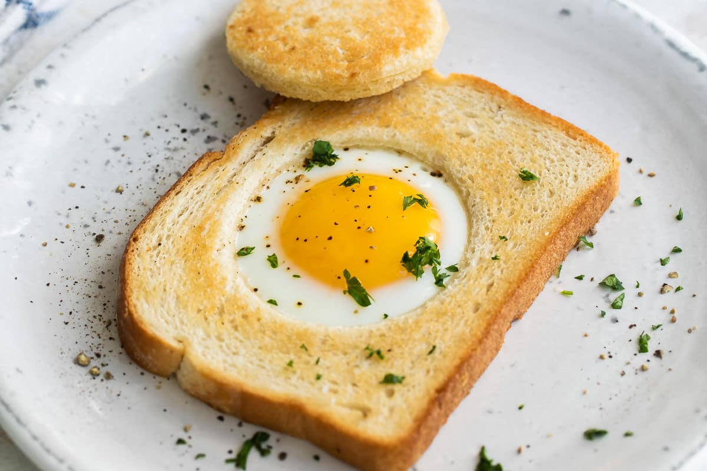

Eggs in a Basket

Description
Out of all the ways to prepare eggs, none are as playful as eggs in a basket. There's just something magical about an egg cooked inside a piece of toast that can instantly brighten any morning. And did I mention they also taste really, really good?
Ingredients
- 2 slices hearty sandwich bread (1/2- to 3/4-inch thick), such as sourdough, whole-wheat, or multigrain
- 3 tablespoons unsalted butter
- 2 large eggs
- Kosher salt
- Freshly ground black pepper
- Chopped fresh chives, for garnish (optional)
Steps
- Cut holes in the bread. Using a 2- to 2 1/2-inch round cutter (or the bottom of a small drinking glass), cut out the centers of 2 slices sandwich bread. Reserve the centers.
- Melt the butter. Melt 3 tablespoons unsalted butter in a large nonstick skillet over medium-low heat. Swirl the pan as the butter melts to evenly coat the entire surface. You don't want to brown the butter — just melt it. The pan is ready when the butter just starts to sizzle.
- Toast the bread. Add the bread slices with the centers cut out, then nestle the bread rounds next to them. Cook until the bread is toasted and light golden-brown on the bottom, 3 to 4 minutes.
- Add the eggs. Flip the slices and rounds over using a thin spatula. Crack 1 large egg into each hole. (It's OK if some of the egg white seeps out from underneath the bread slice.) Season the eggs with kosher salt and several grinds of black pepper.
- Cook the eggs. Cover the pan and cook until the egg whites are fully set, the yolk is still runny, and the other side of the bread is golden-brown, 3 1/2 to 4 1/2 minutes. Check the eggs after 3 minutes: If the bread is not browning, increase the heat. For hard-cooked egg yolks, cook for 5 to 5 1/2 minutes instead.
- Serve immediately. Transfer the toasts and the cut-out rounds to a plate. Garnish with chopped chives, if using, and serve immediately.